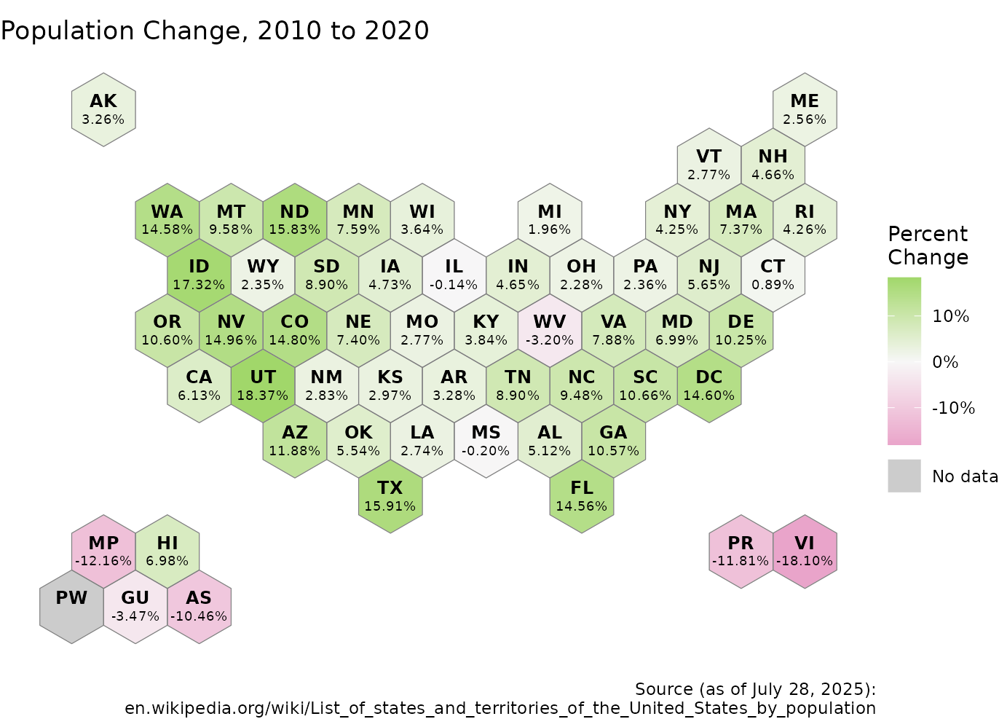

There may be instances where you want to include the geography label as well as another label (such as a value) on the hex map.
The code below pulls in population data from Wikipedia using rvest and the cleans it so it can be used in the hex map.
url <- "https://en.wikipedia.org/wiki/List_of_states_and_territories_of_the_United_States_by_population"
remove_end_brackets <- function(string){
first_bracket <- str_locate(string, "\\[")[1]
if (is.na(first_bracket)){
out <- string
} else {
out <- str_sub(string, 1, first_bracket-1)
}
return(out)
}
wikiTable <- url |>
read_html() |>
html_nodes("table") |>
html_table(fill = T)
variable_name <- variable.names(wikiTable[[1]])[4]
title <- paste("Population", remove_end_brackets(variable_name))
other_data <- wikiTable[[1]][-1,] |>
select(name = 1, pop_change = 4) |>
mutate(perc_label = str_replace(pop_change, "−", "-")) |>
mutate(pop_change = as.numeric(str_replace_all(perc_label, "%", ""))/100) |>
rowwise() |>
mutate(name = remove_end_brackets(name)) |>
ungroup() |>
mutate(name = ifelse(name == "U.S. Virgin Islands", "Virgin Islands", name)) Pull the hexagon coordinates using get_coordinates()
function.
hexmap <- get_coordinates("usaETA", "hexmap")Join the coordinates data with the the population change data.
combined <- left_join(hexmap, other_data, by = "name")Plot data with state label and value label of percentage change in population.
NA_color <- "grey80"
# RColorBrewer::brewer.pal(3, "PiYG")
scale_colors <- c("#E9A3C9", "#F7F7F7", "#A1D76A")
ggplot(combined) +
geom_sf(aes(fill = pop_change), color = NA ) + #color (non-NA) hex
geom_sf( fill = NA, aes(color = "NA") ) + #dummy for NA values
geom_sf( fill = NA, color = "grey50" ) + #hex borders
geom_sf_text(
data=mutate(combined, geometry=geometry+c(0, 5)) # adj state label up by 5
, aes(label=abbr_usps)
, fontface="bold"
, size=3.25
) +
geom_sf_text(
data=mutate(combined, geometry=geometry+c(0,-5)) # adj percent label down by 5
, aes(label=perc_label)
, size=2.5
) +
scale_fill_gradient2(
name = "Percent\nChange"
, low = scale_colors[1]
, mid = scale_colors[2]
, high = scale_colors[3]
, midpoint = 0
, labels = ~sprintf("%1.f%%", 100*.x)
, na.value = NA_color
) +
scale_color_manual( #dummy legend for NA color
name = NULL
, values = NA_color
, labels = 'No data'
) +
guides(
fill = guide_colorbar(order = 1)
, color = guide_legend(override.aes = list(fill =NA_color))
) +
labs(
title = title,
caption = paste0(
"Source (as of ",
format.Date(Sys.Date(), '%B %e, %Y'),
"):\n",
url
)
) +
theme_void()